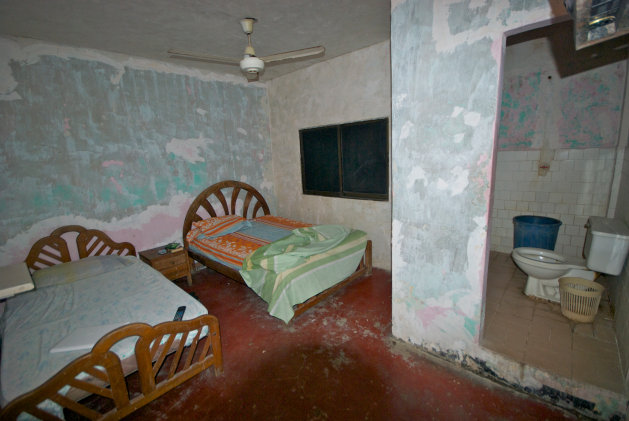

| Presidencial |
 |
A sua decoração contemporânea e sofisticada personifica a simbiose perfeita do conforto com o luxo
discreto. Com 156m² , a Suite Presidencial do Hotel Luar do Sertão é um verdadeiro apartamento de
luxo. Com uma vista soberba sobre Lisboa, dispõe de um quarto principal com cama King size e um
segundo quarto opcional, uma ampla sala de estar, uma sala de jantar, escritório com biblioteca,
cozinha equipada, duas casas de banho e a exclusividade do serviço personalizado do Executive Club.
Os clientes da Suite Presidencial usufruem de check-in e check-out privado 24 horas, serviço VIP de
uma guest relations, acompanhamento de e para o aeroporto, serviço de compras privado e acesso a
Wi-Fi gratuito. Os clientes da Suite Presidencial oodem desfrutar do pequeno-almoço com vistas
panorâmicas, jornais diários e revistas e de um serviço personalizado. |
R$ 530,00 |